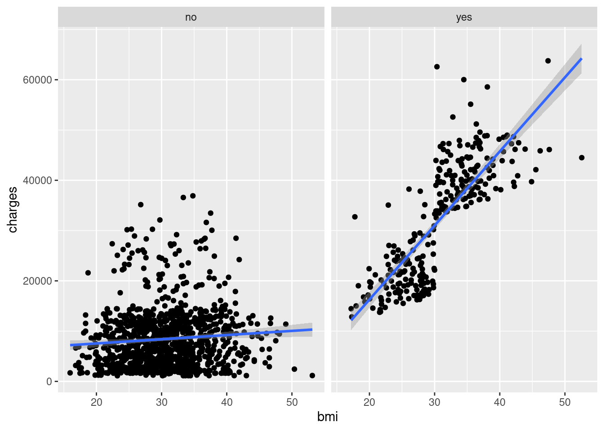

install.packages("ggplot2")11 Visualize data in ggplot2
How to produce publication-ready plots
Abstract
This chapter teaches researchers to create publication-ready data visualizations using ggplot2’s “grammar of graphics” approach. Through color-coded, step-by-step tutorials, researchers learn to build scatterplots for relationship research and bar plots for comparative research by systematically adding layers: data, mapping, geometries, statistics, facets, and themes. Using real insurance data, the chapter demonstrates how to visualize relationships between variables, incorporate grouping through color and faceting, customize plot appearance, adjust axis scales, and export figures with ggsave(). Researchers learn to connect research questions and data types (nominal, ordinal, continuous) to appropriate visualization choices. By the end, researchers will create professional-quality figures for their public health research by building plots layer by layer and selecting visualizations that match their analytical goals.
Keywords
ggplot2, data visualization, grammar of graphics, R, exploratory data analysis
Tipüìñ
ggplot2 resources
ImportantRequired
Your R&D Report and R&D Team Manuscript should include ggsave( ) information so you can export your plots quickly and add them to the poster.
11.1 Example Data: insurance
The example dataset is from the “Medical Cost Personal Costs” database on Kaggle. For this chapter, we refer to it as insurance.
11.1.1 Load and Import
To install and load ggplot2:
Let’s start by loading our dataset and exploring it:
insurance <- read.csv("data/insurance.csv")library(ggplot2)11.1.2 Summarize data
Let’s learn more about our data with summary():
summary(insurance) age sex bmi children
Min. :18.00 Length:1338 Min. :15.96 Min. :0.000
1st Qu.:27.00 Class :character 1st Qu.:26.30 1st Qu.:0.000
Median :39.00 Mode :character Median :30.40 Median :1.000
Mean :39.21 Mean :30.66 Mean :1.095
3rd Qu.:51.00 3rd Qu.:34.69 3rd Qu.:2.000
Max. :64.00 Max. :53.13 Max. :5.000
smoker region charges
Length:1338 Length:1338 Min. : 1122
Class :character Class :character 1st Qu.: 4740
Mode :character Mode :character Median : 9382
Mean :13270
3rd Qu.:16640
Max. :63770 head(insurance, 10) age sex bmi children smoker region charges
1 19 female 27.900 0 yes southwest 16884.924
2 18 male 33.770 1 no southeast 1725.552
3 28 male 33.000 3 no southeast 4449.462
4 33 male 22.705 0 no northwest 21984.471
5 32 male 28.880 0 no northwest 3866.855
6 31 female 25.740 0 no southeast 3756.622
7 46 female 33.440 1 no southeast 8240.590
8 37 female 27.740 3 no northwest 7281.506
9 37 male 29.830 2 no northeast 6406.411
10 60 female 25.840 0 no northwest 28923.13711.2 The Seven Components of ggplot2
The ggplot2 uses seven components to produce publication-ready plots:
Data: The dataset you’re visualizing
Mapping: Which variables go on which axes (aesthetics)
Geometries: The type of plot (points, lines, bars, etc.)
Facets: Subplots based on categorical variables
Statistics: Statistical transformations of the data
Coordinates: The coordinate system (usually Cartesian)
Theme: Visual styling and appearance

11.3 Color-Coded Learning Guide
Throughout this chapter, headings are color-coded to match the ggplot2 layers:
üìä Data: The datasetüó∫Ô∏è Mapping: Which variables go whereüìç Geometries: Points, bars, linesüìè Scales/Statistics: Axes, calculationsüî≤ Facets: Separate panelsüìê Coordinates: Coordinate systemüé® Theme: Visual appearanceWatch for these colors as you build plots step-by-step! üé®
In summary, researchers construct a plot using ggplot2 components in the same way a chef constructs lasagna in layers, one steps at a time.

11.3.1 Understanding Data Types
Before creating visualizations, it’s important to understand your data types:
Qualitative Data:
üè∑Ô∏è Nominal Data: Categories without any order (e.g., Red, Green, Blue)
üì∂ Ordinal Data: Categories with some order (e.g., Small, Medium, Large)
Quantitative Data:
üî¢ Discrete: Countable data (e.g., number of people in a room)
üìè Continuous: Measurable data (e.g., height, weight)
11.4 Decision Tree
Your research question can be classified as comparative research or relationship research (Barroga & Matanguihan, 2022).
11.4.1 Relationship Research
For relationship research, the variables are üìè Continuous because they range along a continuum, such as a scale for beliefs from 1 (strongly disagree) to 6 (strongly agree). To examine the relationship between two continous variables, use the steps below to build a custom scatterplot.
STEP-BY-STEP TO BUILD A SCATTERPLOT
Step 1: Set up data
ggplot(data = insurance)
Step 2: Set up mapping
What is the relationship between BMI and insurance charges?
ggplot(data = insurance,
mapping = aes(
x = bmi,
y = charges))
Noteüìä Layer: Data + Mapping
Two layers are used:
- Data:
insurancedataset - Mapping:
aes(x = bmi, y = charges)
Step 3: Add geometry (points)
Add points to create a scatterplot using geom_point():
ggplot(data = insurance,
mapping = aes(
x = bmi,
y = charges)) + geom_point()
Noteüé® Layer: Geometries
- Geometry:
geom_point()displays data as points
Step 4: Add a statistical layer (trend line)
Add a linear model line with geom_smooth():
ggplot(data = insurance,
mapping = aes(
x = bmi,
y = charges)) + geom_point() +
geom_smooth(method = "lm")
Noteüìà Layer: Statistics
- Statistics:
geom_smooth()calculates and displays a trend line
Notice how it looks like we have two different populations? Let’s explore this further.
Step 5. Incorporate grouping (color)
If you have three variables (2 continouous, 1 categorical/grouping variable), then you can use facets. There are two main approaches to visualizing grouping variables:
Method 1: Using Color
Map the smoker variable to color:
ggplot(data = insurance,
mapping = aes(
x = bmi,
y = charges,
color = smoker)) +
geom_point() +
geom_smooth(method = "lm")
Noteüîµ Layer: Facet (extended)
- Facet: Added
color = smokerto group by smoking status
Method 2: Using Facets
Create separate panels for each group with facet_wrap():
ggplot(data = insurance,
mapping = aes(
x = bmi,
y = charges)) +
geom_point() +
geom_smooth(method = "lm") +
facet_wrap(~smoker)
Noteüìä Layer: Facets
- Facets:
facet_wrap(~smoker)creates separate panels
Both methods reveal that smoking status significantly affects the relationship between BMI and insurance charges!
Step 6. Customize Appearance
Adding Titles and Labels
Make your plot more informative with descriptive titles:
ggplot(data = insurance,
mapping = aes(
x = bmi,
y = charges)) +
geom_point() +
geom_smooth(method = "lm") +
ggtitle("Insurance charges vs
BMI for smokers and non-smokers") +
xlab("Body Mass Index (BMI)") +
ylab("Insurance Charges")
Changing the Theme
Apply a professional theme with theme_bw():
ggplot(data = insurance, mapping = aes(x = bmi, y = charges, color = smoker)) +
geom_point() +
geom_smooth(method = "lm") +
ggtitle("Insurance charges vs
BMI for smokers and non-smokers") +
xlab("Body Mass Index (BMI)") +
ylab("Insurance Charges") +
theme_bw()
Noteüé® Layer: Theme
- Theme:
theme_bw()controls the overall visual appearance
ImportantSelect a theme
Team members should pick one theme (from the complete themes) to use with all plots in the individual reports and the team manuscript!
Adjusting Axis Scales
Sometimes, you need to manually control the range of your axes for better visualization or to match other plots or to capture the entire range of the possible response options (e.g., 1-6, 1-10, 1 - 100).
Set specific limits with xlim() and ylim().
ggplot(data = insurance,
mapping = aes(x = bmi, y = charges, color = smoker)) +
geom_point() +
geom_smooth(method = "lm") +
xlim(15, 55) + # Set x-axis from 15 to 55
ylim(0, 65000) + # Set y-axis from 0 to 65000
ggtitle("Insurance charges vs BMI for smokers and non-smokers") +
xlab("Body Mass Index (BMI)") +
ylab("Insurance Charges") +
theme_bw()
Noteüìè Layer: Scales
- Scales:
xlim()andylim()control axis ranges
WarningWarning: Data outside limits will be removed
Using xlim() and ylim() removes any data points outside the specified range. This can affect trend lines!
ImportantRequirement: X and Y Axes
If your response options range from 1 to 6. Use ylim( ) to adjust the y-axis to range from 1 to 6 too.
Using Colors
Want to improve your plots with colors?
11.4.2 Comparative Research
Comparative research questions examine mean score differences on a continuous (quantitative) variable based on real or artificial (researcher-decided) group membership. Simply put, comparative research offers a way of comparing different categories to one another. These categories can be:
üè∑Ô∏è Nominal Data (Gender Identity)
- Man
- Woman
- Non-Binary
üì∂ Ordinal Data (Age Group)
- 18 - 35
- 36 - 54
- 55 - 75
- 76+
STEP-BY-STEP TO BUILD A BARPLOT WITH geom_bar()
Bar plots are useful for comparing mean scores across groups.
Step 1: Set up data
ggplot(data = insurance)
Step 2: Set up mapping
ggplot(data = insurance,
mapping = aes(
x = region,
y = charges))
Noteüìä Layers: Data + Mapping
- Data:
insurancedataset - Mapping:
aes(x = region, y = charges)
Step 3: Add geometry (bars)
plot_region_charges <- ggplot(
data = insurance,
mapping = aes(
x = region,
y = charges)) +
geom_bar(stat = 'summary', fun = 'mean')
Noteüé® Layer: Geometries
Geometry:
geom_bar()creates barsStatistics:
stat = 'summary', fun = 'mean'calculates means
Step 4: Customize bars
plot_region_charges <- ggplot(
data = insurance,
mapping = aes(
x = region,
y = charges)) +
geom_bar(
stat = 'summary',
fun = 'mean',
fill = "#005a43")
Noteüé® Layer: Theme (color)
- Setting
fill = "#005a43"customizes bar colors
Step 5: Add labels and themes
plot_region_charges <- ggplot(
data = insurance,
mapping = aes(
x = region,
y = charges)) +
geom_bar(
stat = 'summary', fun = 'mean', fill = "#005a43") +
ggtitle("Mean Insurance Charges Based on Region") +
xlab("Region") +
ylab("Insurance Charges") +
theme_bw()
Noteüé® Layer: Theme
- Theme: Labels and
theme_bw()enhance appearance
Step 6: Save your plot using ggsave()
ggsave( ) is a specific function to save a plot as an image in .jpg or .png image. This plot is saved in your “files” folder, which can be exported out of Posit Cloud and then added to your google drive and on to the poster.
# Save the plot to an object
plot_bmi_charges <- ggplot(
data = insurance,
mapping = aes(x = bmi, y = charges, color = smoker)) +
geom_point() +
geom_smooth(method = "lm") +
xlim(15, 55) +
ylim(0, 65000) +
ggtitle("Insurance charges vs BMI for smokers and non-smokers") +
xlab("Body Mass Index (BMI)") +
ylab("Insurance Charges") +
theme_bw()
# Print and save to the plots folder
print(plot_bmi_charges)
ggsave("plots/plot1_bmi_smoker.png",
plot = plot_bmi_charges,
width = 10, height = 8, dpi = 300)After you run the code, the console will ask you a question. The use of plots/ in the ggsave() code chunk will create a folder called Plots in your files within Posit Cloud if you type “1” and click return/enter.
In your Files, click the Plots folder. Your location within Posit Cloud is shown below: Cloud > project > plots. You are in the Plots.
Click the gear icon (above ” project > plots”), click export, and Download. Then, upload this the plot and others within your team’s google drive > Team Survey Data > Quant Data > Plots.
ImportantRequirement
You must use file for both your final report and team manuscript.
Your R&D Report, Team R&D Manuscript, Final Report, and Final Manuscript must include ggsave( ) for plots.
Violin Plots with geom_violin()
Violin plots provide a different way to visualize information to capture the distribution of data for each category.
ggplot(data = insurance,
mapping = aes(
x = smoker,
y = charges,
fill = smoker)) +
geom_violin() +
ggtitle("Distribution of Insurance Charges by Smoking Status") +
xlab("Smoker (Y/N)") +
ylab("Insurance Charges") +
theme_bw()#plot above plot without using plot = argument
ggsave("plots/plot2:smoker.png",
width = 10, height = 8, dpi = 300)To learn more about how to use violin plots for pre/post data, go to the next chapter on visualizing pre/post scores.